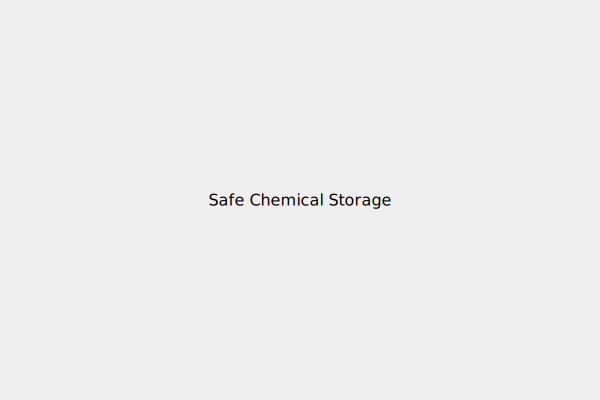

අවදානම් අවම කිරීම
නිවසේ රසායනික ද්රව්ය සුරක්ෂිතව ගබඩා කිරීම
රසායනික ද්රව්ය සෑම විටම ඒවායේ මුල් බහාලුම්වල (original containers) ගබඩා කරන්න. ලේබල පැහැදිලිව පෙනෙන සේ තබන්න.
භාවිතයෙන් පසු බහාලුම්වල මූඩි තදින් වසන්න.
දරුවන්ට සහ සුරතල් සතුන්ට ළඟා විය නොහැකි ස්ථානයක, වඩාත් සුදුසු අගුලු දැමිය හැකි කබඩ් එකක ගබඩා කරන්න.
ආහාර ද්රව්ය අසල හෝ ඒවා සමඟ ස්පර්ශ වන සේ රසායනික ද්රව්ය ගබඩා කිරීමෙන් වළකින්න.